Culture générale
3214 fiches en français sur le thème « Culture générale », prêtes à imprimer et avec corrigé.
3.214 ressources
Niveau
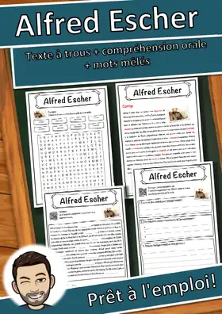
Alfred Escher – Fiche : texte à trous, compréhension orale et mots mêlés
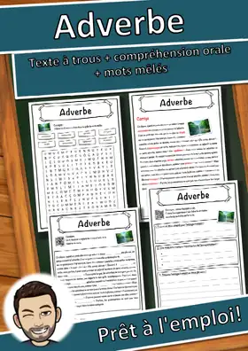
Adverbe – Fiche : texte à trous, compréhension orale et mots mêlés
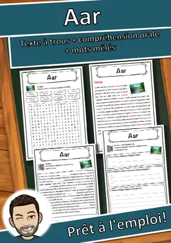
Aar – Fiche : texte à trous, compréhension orale et mots mêlés
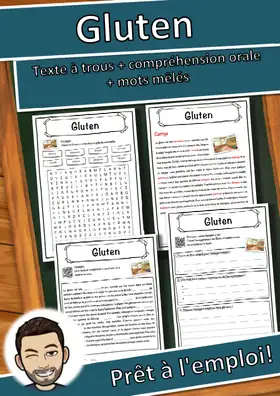
Gluten – Fiche : texte à trous, compréhension orale et mots mêlés
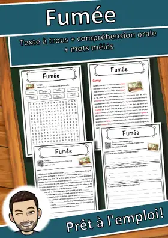
Fumée – Fiche : texte à trous, compréhension orale et mots mêlés
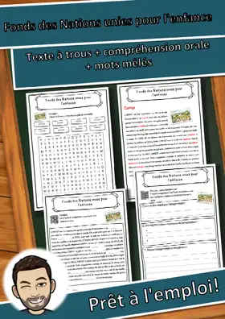
Fonds des Nations unies pour l'enfance – Fiche : texte à trous, compréhension orale et mots mêlés
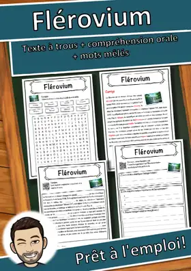
Flérovium – Fiche : texte à trous, compréhension orale et mots mêlés
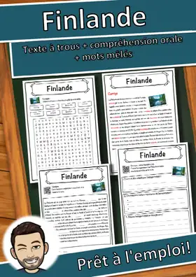
Finlande – Fiche : texte à trous, compréhension orale et mots mêlés
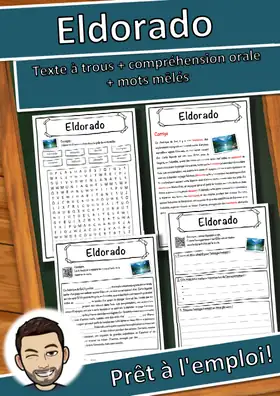
Eldorado – Fiche : texte à trous, compréhension orale et mots mêlés
Effets spéciaux – Fiche : texte à trous, compréhension orale et mots mêlés
Céréale – Fiche : texte à trous, compréhension orale et mots mêlés
Cérumen – Fiche : texte à trous, compréhension orale et mots mêlés
Croisade – Fiche : texte à trous, compréhension orale et mots mêlés
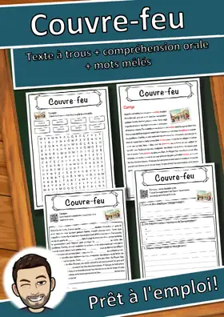
Couvre-feu – Fiche : texte à trous, compréhension orale et mots mêlés
Coup de soleil – Fiche : texte à trous, compréhension orale et mots mêlés
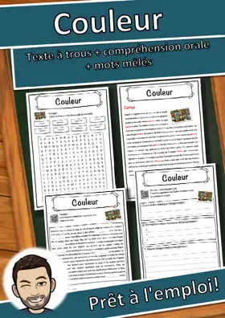
Couleur – Fiche : texte à trous, compréhension orale et mots mêlés
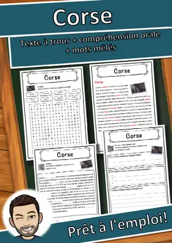
Corse – Fiche : texte à trous, compréhension orale et mots mêlés
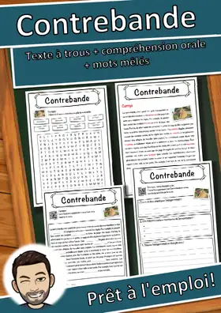
Contrebande – Fiche : texte à trous, compréhension orale et mots mêlés
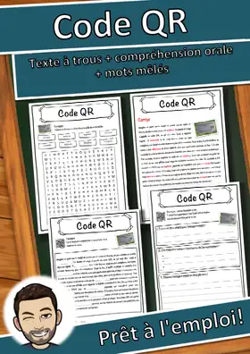
Code QR – Fiche : texte à trous, compréhension orale et mots mêlés
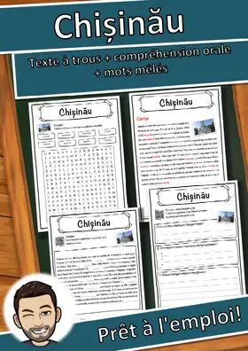
Chișinău – Fiche : texte à trous, compréhension orale et mots mêlés
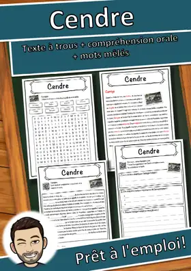
Cendre – Fiche : texte à trous, compréhension orale et mots mêlés
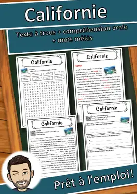
Californie – Fiche : texte à trous, compréhension orale et mots mêlés
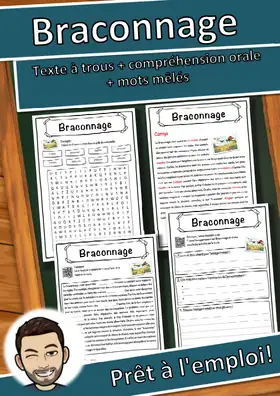
Braconnage – Fiche : texte à trous, compréhension orale et mots mêlés
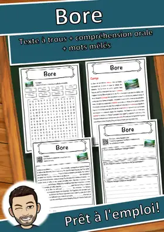
Bore – Fiche : texte à trous, compréhension orale et mots mêlés
Bonheur – Fiche : texte à trous, compréhension orale et mots mêlés
Bob le bricoleur – Fiche : texte à trous, compréhension orale et mots mêlés
Blé – Fiche : texte à trous, compréhension orale et mots mêlés
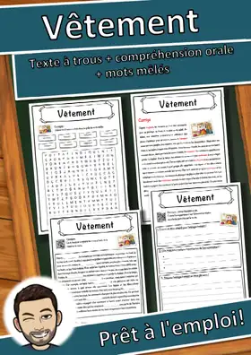
Vêtement – Fiche : texte à trous, compréhension orale et mots mêlés
Témoins de Jéhovah – Fiche : texte à trous, compréhension orale et mots mêlés
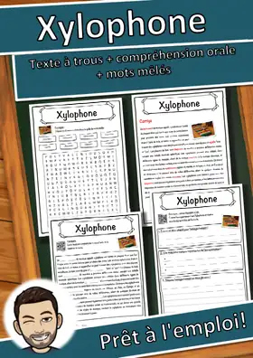
Xylophone – Fiche : texte à trous, compréhension orale et mots mêlés
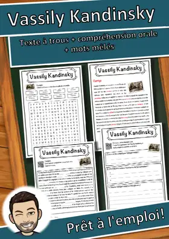
Vassily Kandinsky – Fiche : texte à trous, compréhension orale et mots mêlés
Gerridae – Fiche : texte à trous, compréhension orale et mots mêlés
Transformateur électrique – Fiche : texte à trous, compréhension orale et mots mêlés
Stream – Fiche : texte à trous, compréhension orale et mots mêlés
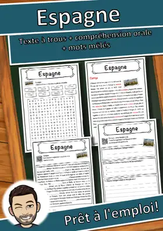
Espagne – Fiche : texte à trous, compréhension orale et mots mêlés
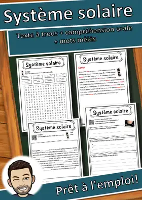
Système solaire – Fiche : texte à trous, compréhension orale et mots mêlés
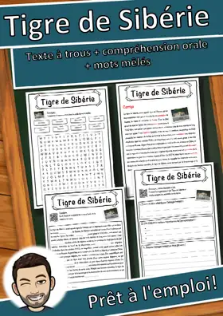
Tigre de Sibérie – Fiche : texte à trous, compréhension orale et mots mêlés
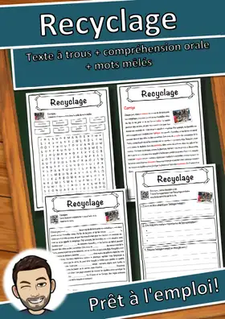
Recyclage – Fiche : texte à trous, compréhension orale et mots mêlés
Programmation informatique – Fiche : texte à trous, compréhension orale et mots mêlés
Pékin – Fiche : texte à trous, compréhension orale et mots mêlés
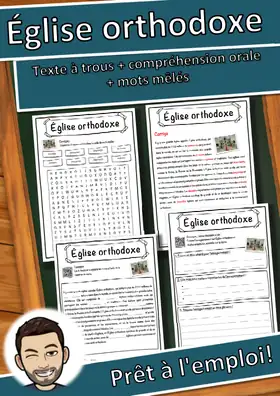
Église orthodoxe – Fiche : texte à trous, compréhension orale et mots mêlés
Oggy et les Cafards – Fiche : texte à trous, compréhension orale et mots mêlés
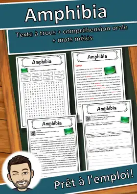
Amphibia – Fiche : texte à trous, compréhension orale et mots mêlés
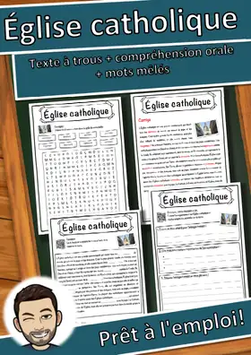
Église catholique – Fiche : texte à trous, compréhension orale et mots mêlés
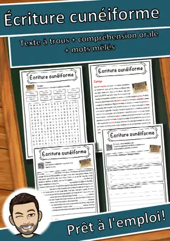
Écriture cunéiforme – Fiche : texte à trous, compréhension orale et mots mêlés
Service de renseignement – Fiche : texte à trous, compréhension orale et mots mêlés
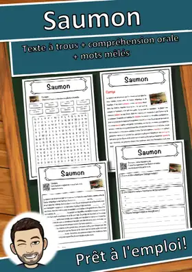
Saumon – Fiche : texte à trous, compréhension orale et mots mêlés
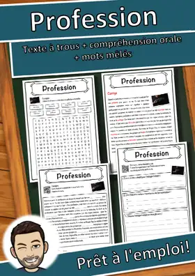
Profession – Fiche : texte à trous, compréhension orale et mots mêlés
Aucune ressource trouvée – essaie un autre mot ou un autre filtre.